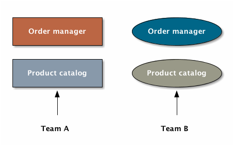
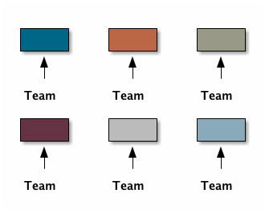
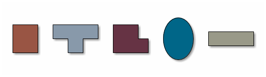
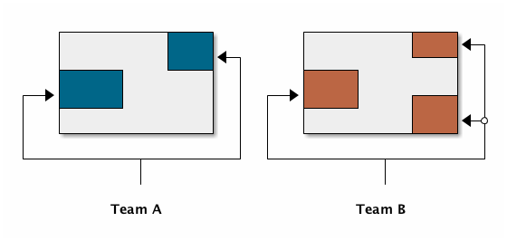
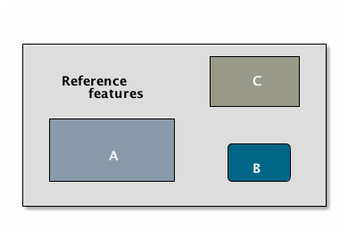

Software customization is really hard
Table of Contents

Figure 1: Two custom versions of the same product. Color and shape are used to illustrate differences.
I have been thinking long and hard about how to do software customization properly at a software architecture level. I don't want to claim that I have figured things out, but I offer what I think is a reasonably abstract solution, if that makes sense. I will detail my findings below, but first let's start by understanding the problem.
The primary goal of software customization is to satisfy the needs of its users. This means implementing their requirements into the product. The secondary goal is to do this efficiently. Needless repetition is what characterizes a bad software product line. Figure 1 illustrates this problem: two teams are building a similar twice from scratch.
Customization is, at heart, modification. By modifying a certain basic version of a product, one creates a new product that behaves differently, works differently, looks different—it's not the same product anymore.
The extent and size of modifications defines the difficulty of customization. A product can be easily customizable for different reasons. The modifications required to build a custom product might be small. Or there might be a lot of them, but they are easy to implement. It's not always a game of numbers.
When creating a custom product, we look back to what we are customizing. The base product that requires modification is a baseline product. This baseline product establishes the reference implementation from which we create custom products. The modifications, when split into discrete parts, are customizations. Together, a customized reference is a custom version or a custom product.

Figure 2: Repetition can indicate the need for a reference product.
From a product management perspective, the reference is a product. Yet, from a business perspective, nobody sells a reference product. Customers always require some modifications, and won't accept an unmodified reference implementation. So what is the business value of the reference? Is there any value in keeping it alive? Why not always do custom versions from scratch?
The answer is scale. It depends. If the deliverable units are small, then it might actually be easier to do complete customization. This approach will eventually prove unscalable: there comes a limit where it is more advantageous to start sharing technology by establishing a reference implementation. Figure 2 shows a situation where there are parallel teams building the same product in isolation.
Sometimes it is wise to go fully custom, even with a lot teams. If the teams are small and building different things, it is natural, since the things they build are not related. There can always be some technology sharing in such a scenario. If, however, the units are building the same thing with slight differences, breaking the development process into a reference implementation makes sense. This is often the case in product development, so it is also the case in which I will focus here. Let's ignore the cases where the products are different, like in Figure 3.
From an engineering perspective, the biggest challenge in customization is how to keep the reference clean. Nobody wants to have customization artifacts, the customizations themselves, sticking out jaggedly in the code. It is much more advantageous to have a plug-in approach, whereby the architecture isolates customizable units in such a way that it does not make the product inflexible. If the code looks like it's full of switches and toggles for customizationz the code can be really hard to reason about and maintain.

Figure 3: Establishing a reference product can be hard if the versions aren't alike.
On the other hand, customization has to be efficient. Most of the effort in the product development process should always be in the reference product. The customizations come later, they are modifications, they are not a new product. If a product team spends more time in producing the user-facing custom versions than the actual reference product, this says that there are a lot of issues with the architecture.
1 On palimpsests
When I think of customization gone wrong, I think of the word palimpsest. Palimpsest derives from Ancient Greek palímpsēstos, meaning "again scraped". Palimpsests were manuscript pages created by erasing them so that they could be reused for writing new documents. Palimpsests were feasible when the raw material for parchment was expensive. It was more economical to erase and reuse a piece of parchment than getting new parchment.
A palimpsest is eerily similar to a failed software customization process. In a failed customization, the reference is written over to create a custom product. This is not efficient. If the reference product is developed in parallel by a separate team, every time they introduce a new feature, the customizing team is impacted. They must either figure out how to bring this new feature in the custom product, or worse, remove it entirely. Either way, this is negative work: work is done to undo work done by others.
This inefficiency will eventually sink the teams. For every new feature potentially a new anti-feature is made. In an ideal development process, reference features flow seamlessly in the custom versions. It does not create conflicts.

Figure 4: Overwritten custom versions of a reference product (grey).
Overwriting is particularly prominent in version control customization. Customization using version control, also known as branching or forking, is antithetical to the idea of proper customization. I find that most branching-based customization is just overwriting existing functionality, as seen in Figure 4.
What is more, people don't want to do branching customization but they're often forced to, because the software wasn't designed for customization from the get-go. The is the heart of the issue. it is important to design for customization from the beginning. You cannot add it later.
It's now obvious that the product should be designed to be extended so that no part is is overwritten. Parts can be replaced, added, removed or altered. The customization process should feel like drawing on an outline, instead of using an eraser to blank a canvas to draw something new.
2 Efficiency is paramount
So the goal is to be able to maintain and develop a reference product and the custom versions. This process should be as efficient as possible. There should be zero rewriting. Most of the time should be spent on installing the customizations. This part of the customization I call wiring.
There are many ways to do wiring. One of the easiest, and probably the least complicated solution, is to use plain if statements to toggle custom logic. The switches are turned on or off using run-time configuration. The application reads the configuration at run-time and determines its behavior based on the configuration.
At this point I have to make a distinction between configuration and application. It is easy to overlook but the detail is important. Configuration is something that's metadata which governs the behavior of an application, the application itself is an implementation of the behavior. I won't specify any particular medium for configuration, it can be text files, databases, a remote server. The important part is that it is somehow structured and human-readable, and that it can alter the application behavior.
Configuration alone isn't going to solve the problem. Programming the customizations into the reference product and selecting them at run-time makes the product bigger. A larger product is harder to maintain.
ditaa::images/custom6.ditaa[format=svg,separation=false]

Figure 5: Custom versions (A, B, C) are just subsets of a large reference product.
So what is it then? By now it is apparent that customizations should not overwrite existing functionality, the reference product should lend itself to extension. On the other hand, piling customizations together and selecting a subset of them to create a custom version can make the product really big. What if there are five different implementations of the same reference functionality, and this is true for five other features? Now you have 25 permutations to choose from! Figure 5 illustrates a big reference product. Customs versions originate from subsets of a large reference.
Different languages give different tools for doing customization tricks. Perhaps the most basic one of them after branching logic—if's and else's—is trying to use inheritance from object oriented programming.
You really don't want to do customization using inheritance.
3 Inheritance is not a solution
Another troublemaker is to use inheritance from object-oriented programming to do customization. This is extremely dangerous because it doing so tends to break the Liskov substitution principle. With inheritance, customization is created by overriding behavior in a reference class. While this makes sense for simple behavioral subtyping scenarios, where an abstract entity is implemented using inheritance, the customization approach tends to inherit the implementation, providing the custom implementation.
This is particularly harmful because the Liskov substitution principle asserts that if \(q(x)\) is a property provable about objects \(x\) of type \(T\), then \(q(y)\) should be provable for objects \(y\) of type \(S\), where \(S\) is subtype of \(T\).1
To paraphrase Wikipedia, this means that objects of type \(T\) should be replaceable by objects of type \(S\), without altering the behavior of the program. In the principle any \(S\) behaves the same way as any \(T\). Substituting one with the other has no overall effect on the program.
This is where the principle collides with inheritance-based customization. The whole point of customization is to alter program behavior, using inheritance to do customization decidedly violates the substitution principle!
Of course it is possible to ignore the principle, but to me, it is a valuable property of any object-oriented design. By obeying the principle, we gain composability, since we can replace any \(T\) with a \(S\), and we can expect the same invariants to hold. To me, behavioral subtyping is the only principle of object-oriented programming that makes sense and is useful.
4 Plug-ins are not a panacea
Let's address the elephant in the room. By now, astute readers might have guessed that the we should be using modules and build a plug-in architecture to get easy customization.
A plug-in architecture is obviously a solution to customization. The process is as follows. We take the core product and inspect it and determine parts that are customizable. We then build the product in such a fashion that swapping out these parts is easy. Each part has alternatives, at least one.
In engineering lingo, these parts are modules, and a product engineered like this is a modular product. The idea is to have a mechanism that can support different implementations of the same thing, built in such a way that the changing of implementations is easy.
To create a customized version, we take the core product and choose our set of parts. A custom version, voilà ! Now the customization process becomes a part-picking experience, by taking features off the shelf.
The reality is somewhat darker than this. By emphasizing somewhat I mean a lot darker than this. The preceding paragraphs described the ideal scenario of a modular architecture.

Figure 6: Emmental cheese.
Building modularity properly is tremendously difficult. You not only have to plan for the known use cases—the custom scenarios—you also have to plan for the unknown use cases. If your universal interface stops working because you didn't consider a case where the customization explicitly requires non-universality, tough shit! Maybe you didn't enforce the Liskov substitution principle, and your messaging system was co-opted into a customer profiling engine, and then the GDPR kicked in, and now your data protection officer wants a word with you!
5 A strong reference
A rather typical nightmare scenario is that the reference is like a block of Emmental, only the holes are too big, or there are too many of them. This is usually a symptom of insufficient reference engineering, that is, the reference is not given the attention it deserves. This is the thin reference scenario. In the thin reference scenario, the reference is not a viable product, because the customizations, not the reference itself, received the brunt of engineering focus.
It is often the case that the reference product is never a viable product, but
it should be viable enough. The reference needs to be concrete enough to build
a model of what the application is. LINK TO CUSTOM illustrates a modular
architecture where most of the implementation is in the modules. While this
approach can be viable, if the modules lack strong defaults, it might be hard to
say what the reference does.
An extremely modular architecture..
ditaa::images/custom7.ditaa[format=svg,separation=false]
If the reference implementations of the modules are poorly done or unusuable, it will be hard to say what the reference product does. This makes customization difficult, since the only actual product instances are the customized ones. This creates an awkward situation where the reference serves no purpose but to act as a template for customizations, but the reference isn't a template!
A strong reference product is also useful for quality purposes. If any module has a reference implementation, the custom implementation can be verified against the reference implementation. If the reference implementation doesn't exist, one must implement new quality checks for the custom implementation.
Having a strong reference will prove problematic when the reference is extremely modular. A modular architecture enables customization. A modular architecture isn't a goal in itself. The problem with an extremely modular architecture is you now need to maintain a reference product. That can get onerous if the amount of modularity is large, because now every customizable module has to be built and validated twice.
6 Reintegration
Organizing the customization into a smaller set of modules makes
maintaining the modular architecture easier. If we rearrange the modules
of LINK TO CUSTOM7 and group them together as a
customization layer, we get something like LINK TO CUSTOM8. The idea is to organize the architecture
into the static, non-customizable parts into a separate unit, and the
customizable part as the customizable unit.
*Visualizing the customizations as extensions on top of a base layer. This is most likely not how the customizations are organized concretely..*
ditaa::images/custom8.ditaa[format=svg,separation=false]
In LINK TO CUSTOM9 we see that the area marked Default
is the reference implementation of the customization part. The
architecture is now easier to understand from this picture. Customizable
plugin belong to the customizable layer and the non-customizable parts
are in the static layer.
Identifying a reusable part..
ditaa::images/custom9.ditaa[format=svg,separation=false]
It is a question of architectural taste how big the customizable area of the product should be. Some applications like Eclipse are completely2 modular. The inverse of a completely modular architecture is an non-modular architecture. By now it is clear that a non-modular architecture is not good for customization. On the other hand, when working with a totally modular architecture, if the development team is willing to put with maintaining a strong reference product and separate custom versions, a totally modular architecture might be fine.
Static reintegration. X is made a standard extension..
ditaa::images/custom10.ditaa[format=svg,separation=false]
Sometimes customizations can be seen as reusable assets that should
exist in all versions, in the reference product. This is the
reintegration process where custom features are made a part of the
reference product. There are two approaches to reintegration. Once the
reusable part is identified in a customization (see
LINK TO CUSTOM10), we can choose whether it should be a
global customization. A global customization means that this is a
customization point in every version. So the feature is made a module in
the reference and custom versions (LINK TO CUSTOM11).
What if the feature is not seen as a customization, just as a feature
that should be made a static part of the reference? In this case we make
the feature a non-customizable part of the reference product, as seen in
LINK TO CUSTOM10. This is the static extension process:
a custom asset, from a custom version, is made part of the reference
product. This happens when the customization is not really a
customizable thing, it's something every instance of the product
benefits from.
Static reintegration. X is made a non-custom part of the reference..
ditaa::images/custom11.ditaa[format=svg,separation=false]
The problem with reintegration is the architecture might not allow to do
any of this. The extraction of the reusable part might be impossible
(LINK TO CUSTOM10) because the feature too tightly
coupled to the customized product. It might also be impossible to bring
new features into the reference product because it wasn't built to
support static extension. This forces the hand of the design to try the
global customization approach.
Any of the aforementioned scenarios are time-consuming and risky solutions to an underlying design failure. These scenarios are symptoms. They are artifacts of a design process gone wrong. The architectural design of the product has failed.
Perhaps the most important part of customization is to design for it, to anticipate it. But that's the hardest part of all!
7 No easy wins
The unfortunate truth is that you can always prepare for customization but you can never prepare for it perfectly. Either one is too prepared with an over-engineered product or one is not prepared enough. These are the usual judgments laid a posteriori of a customization scenario.
I have observed that we are just as likely to over-engineer than to under-engineer. This factoid is based on my idea that people tend to place too much emphasis on the things they do know and too little emphasis on the things that they don't know, and these estimation errors tend to be usually equal in measure. The things that we do know characterize our design with a vision of "holes" or "modules", the actual customization points, and the things that we don't know add new places for these modules.
Each step towards implementing a requirement, a product feature, always creates an inflexibility of sorts. After all, a product is the sum of the features. To create a customizable feature, one must imagine the product with the feature removed or significantly altered. Omit that step, and you will have a difficulty customizing it!
But this step can be taken to extremes. Exercising caution when planning for customization is necessary, because over-engineering a product for customizations delays the time to market. Creating a minimum viable product will take significantly longer by planning too much for customization. The flip side is that under-engineering makes customization difficult, because you're forced to take the product apart and redesign for customization.
It varies on a case-by-case basis which one takes the least time or other resources. If you don't over-engineer too much, your investment might pay off in the end, since adding new features will be easy. Conversely, going over the top might have made the product too expensive.
I have observed some heuristical approaches towards finding a good synthesis. One of them is a rule of thumb to never build customization on the first iteration. Then on the second instance, when the customization becomes necessary, customizability is added. I think this is a very Brutalist approach, but it is feasible, if the process is done correctly. It eliminates the risk for over-engineering customization, but it creates a need for effort when the customization is necessary. It is obvious that this heuristic is only feasible when the planned customization requirements aren't certain. If they're certain, this approach is harder to justify.
By now I would say that the question of how much engineering should be done towards customization depends on the following factors:
- The size and scope of the product itself. What is the product, what does it do?
- The size and scope of the customizations. What can be customized? How hard is it do a customization?
- The foreseeable necessity of customizations. How is going to be customized, if at all?
And therefore it's necessary to evaluate all three carefully before choosing the right amount of customization. But there's no universal heuristic. You always aim too high or too low. This may sound a little fatalistic, but I think it's possible to improve the accuracy of this process as one learns to estimate the above points.
8 Towards a software customization framework
Programming languages in all their variety offer tons of techniques for building customizable software. From extensible classes to monkey patching to type classes and run-time class loading, there are many tools out there. I think the programming part of building customizability is just one part of the process, and while it's an important part, it's not the only part, as you have probably read now.
As I stated at the start, I'm not interested in offering an end-it-all solution or programming technique to tackle the issue of software customization. What I'm interested in is building a framework, in the methodology sense, towards doing customization. This post is just the beginning.
That said, I'm not going to just write a post that is basically just a brain dump of the things that I find difficult on the topic. I said in the beginning that I have developed some rough ideas on how to address the issue of customization. This lays the groundwork on what the framework I mentioned above is going to solve.
- A strong reference implementation is necessary
- When building a product that is going to have multiple custom instances, it is important to have some sort of a reference to which the instances can be compared. Not only this makes quality assurance easier, because you can validate the instance against the reference, it also makes it easier to separate what is custom and what isn't. The reference product is the product itself, the custom instances are just extensions of it. Furthermore, custom instances can produce features that are desirable in the core product or other customizations, and the reference product is a channel for adding new features to the product.
- Identifying the necessity of customization
- It is important to known in advance whether the product is going to have custom instances or not. This makes it easier to know which parts will require customization and which parts are more static. That said, it is often difficult to anticipate what parts will require customization. The architecture should be flexible enough to permit adding customizability as easily as possible. The architecture should also understand that some requirements may be missing entirely, so in one sense, the architecture must always anticipate some customization or redesigning.
- The quantity of architectural design
- In anticipating the customizations, it is just as easy to over-engineer for every customization as it is to under-engineer for no customization. It can be said that for every known requirement for customization another unknown customization requirement is going to materialize eventually. Creating an overly composable, supremely modular architecture is not a good idea; conversely creating a rigid and static architecture is equally a bad idea. In my view, there are no universal heuristics on just how much is necessary. It requires judgment on a case-by-case basis, especially by taking the previous two points into account.
9 Conclusion
This post became way longer than I originally intended to. I originally wanted to present a particular customization technique using the tricks of one particular programming language and programming environment, but as it grew larger I wanted to give the topic a broader treatment. But this barely even scratches the surface. I have not even spoken on how to do customization in practice at all.
I suppose at this point this post is a beginning in a series of longer ones, treating the individual elements of the previous list in a more profound manner. This is a very large topic in general, as it broaches fields from software architecture to product management to requirements engineering to actual programming.
That is not to say I plan to devote the whole blog towards software product engineering, let alone write a book about it (though that would be interesting), but as I deal with these topics daily in my job, it's a very interesting topic to me. So interested readers can possibly expect more of the subject!
These ideas are just materializations of my recurring thoughts while designing software products, and most of them are not new. A step in any direction is going to lead one towards what is known as software product line engineering, that is, recognizing that the creation of software products can be understood using product lines.
Fundamentally, the art of customization is about software reuse. For a deeper introduction to the idea of reuse I recommend the book Software Reuse: Architecture, Process and Organization for Business Success cite:[jacobson1997]. From the concepts of reuse it is easy to make the transition to the idea of software product lines. A good introduction to the subject are the books Software Product Lines: Practices and Patterns cite:[pohl2005software], and Software Product Line Engineering: Foundations, Principles and Techniques cite:[clements2002software].
10 References
[2]
References
| [1] | Paul Clements and Linda Northrop. Software product lines: Practices and Patterns. Addison-Wesley, 2002. [ bib ] |
| [2] | Ivar Jacobson, Martin Griss, and Patrik Jonsson. Software Reuse: Architecture, Process and Organization for Business Success. ACM, 1997. [ bib ] |
| [3] | Klaus Pohl, Günter Böckle, and Frank J van Der Linden. Software product line engineering: foundations, principles and techniques. Springer Science & Business Media, 2005. [ bib ] |
Footnotes:
Liskov substitution principle. On Wikipedia, retrieved 7th April 2018.
Developing Eclipse plug-ins, retrieved 11th April 2018.